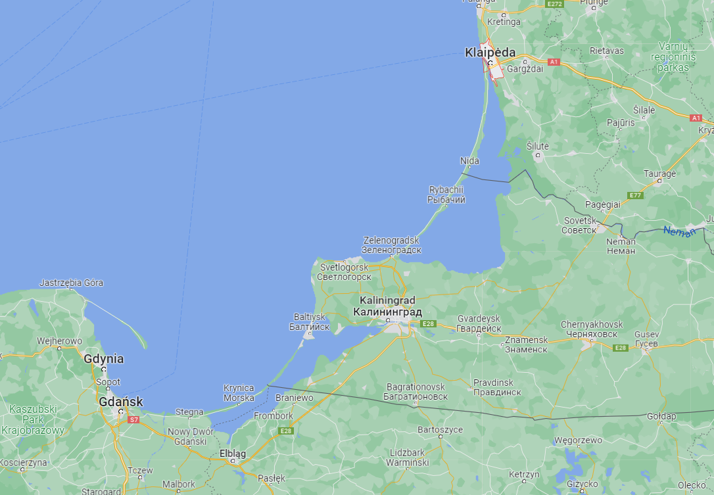
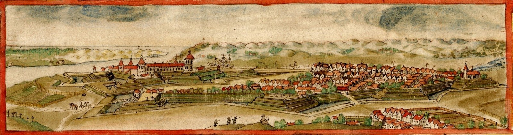
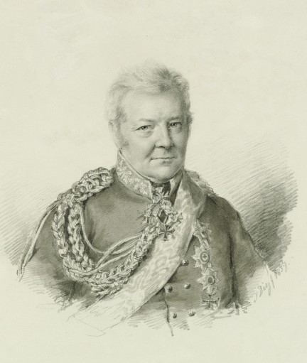
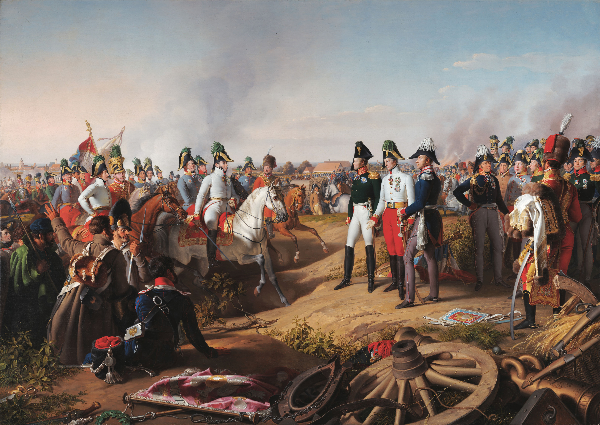
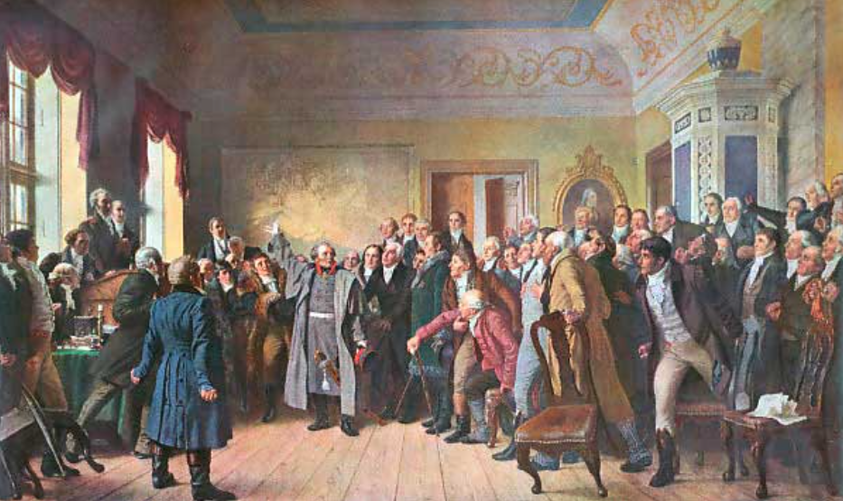
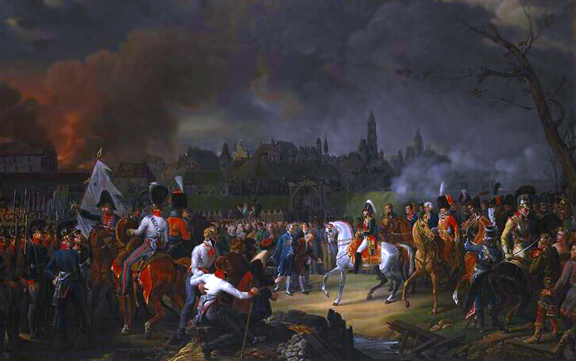

공간이 정신을 지배한다 - 브레슬라우로 떠밀려가다
게시: 2022-04-11T06:30:16+09:00
1812년 12월 30일 요크 대공이 단독으로 러시아와 강화 체결을 한 뒤, 아직 어느 쪽 손을 잡아야 할 지 갈팡질팡하고 있던 프로이센의 운명은 그야말로 풍전등화와 같았습니다. 1월 6일, 프랑스군이 버리고 떠난 동프로이센의 수도 쾨니히스베르크(Königsberg)에 러시아군이 무혈입성했습니다. 여기는 분명히 프로이센 영토였는데, 뮈라가 이끄는 그랑다르메의 패잔병들은 동맹군으로서 쾨니히스베르크에 들어왔다고 치고, 러시아는 분명히 공식적으로 프로이센과 교전 상태에 있는 적국이었습니다. 러시아군은 이미 그 11일 전인 12월 27일, 동프로이센의 메멜(Memel, 리투아니아어로 클레이페다 Klaipėda)를 점령했는데, 이 곳에는 소수의 프로이센 수비대가 배치되어 있었고 이들은 러시아군에게 모조리 포로 신세가 된 바 있었습니다. 쾨니히스베르크에 들어온 러시아군이 과연 자비로운 해방군인지 잔혹한 점령군인지 아직 결정된 바가 없었습니다.

(메멜은 당시 동프로이센 일대 전체를 지칭하기도 했지만 여기서는 현재 리투아니아 제3의 도시인 클레이페다를 뜻하는 것입니다. 지금도 인구가 15만 정도 됩니다.)

(1674년 그려진 메멜, 즉 클레이페다의 전경입니다.)
이렇게 자국의 주요 도시가 침탈되고 있는 상황에서 러시아와 싸울 것인지 한편이 될 것인지 서둘러 결정을 내려야 했던 프리드리히 빌헬름은 결정을 미루고 그가 신임하는 군사 고문인 크네제벡(Karl Friedrich von dem Knesebeck) 중령을 사절로 보냅니다. 크네제벡이 향한 곳은 파리도 페체르부르그도 아닌 빈(Wien), 바로 오스트리아 제국의 수도였습니다. 1월 12일 빈에 도착한 크네제벡 중령은 오스트리아의 외교 정책을 실질적으로 좌지우지하고 있던 메테르니히를 만납니다. 여기서 크네제벡을 통해 오스트리아의 메테르니히에게 전달한 프리드리히 빌헬름의 뜻은 전혀 색다른 것이었습니다. 바로 프로이센과 오스트리아가 힘을 합해 라인 연방을 포함한 독일권의 무장 중립을 선언하자는 것이었습니다. 이건 정말 씨알도 먹히지 않는 소리였습니다. 당시 유럽은 크게 보았을 때 서부의 패권국 프랑스와 동부의 신흥 강국 러시아가 한판 싸움을 벌이는 것을 피할 수 없는 상황이었습니다. 특히 전통적으로 유럽 대륙이 분열되고 서로 싸우도록 분란을 조장하던 영국이 금화와 은화를 뿌려대고 있었습니다. 당시 영국은 북쪽 발트 해 너머에서 비교적 얌전히 웅크리고 있던 스웨덴도 싸움판에 끌어들이기 위해 50만 파운드와 2만 정의 머스켓 소총을 스웨덴 측에 지급하겠다고 제안하고 있을 정도로 열성적이었습니다. 그런 와중에 프랑스와 러시아가 싸움을 피하기는 힘들었고, 그 중간에 위치하고 있는 프로이센은 천상 이쪽이든 저쪽이든 편을 택해야 했습니다. 당연히 메테르니히는 프리드리히 빌헬름의 제안을 거절했습니다. 게다가 그런 무장 중립은 프로이센의 입지를 강화시키는 결과를 낳을 텐데 그건 독일권의 패권을 놓지 않으려는 오스트리아가 바라는 바가 전혀 아니었습니다. 다만 프리드리히 빌헬름도 바보는 아니었습니다. 그는 크네제벡에게 오스트리아가 무장 중립을 거절할 경우 제시할 두번째 제안이 있었습니다. 프로이센이 러시아와 연합하는 것을 지지해달라는 것이었습니다. 아직 대놓고 나폴레옹을 적대시할 군사력을 갖추지도 못했고 형편도 아니었고, 또 과연 프로이센을 둘러싸고 프랑스와 러시아가 벌일 싸움의 승패가 어떻게 나올지 확신을 가지지 못했던 오스트리아는 이에 대해서도 공개적으로 입장을 표명하는 것을 거부했습니다. 다만 메테르니히는 자신은 프로이센이 러시아와 손잡는 것을 응원한다고 정말 말만 보탰습니다. 결과적으로 프리드리히 빌헬름이 오스트리아로 사절을 보냈던 것은 공연한 시간 낭비였을 뿐 실질적인 성과는 아무 것도 없었습니다.

(크네제벡입니다. 그는 나폴레옹보다 1살 많았는데 원래 하급 귀족 출신이었기 때문에 승진은 빠르지 않아서 1812년 당시에도 중령이었습니다. 전투 현장보다는 주로 참모 및 연락장교 등의 후선 업무를 맡았기 떄문에 더더욱 승진이 느렸습니다. 그러나 그는 프로이센의 전쟁 외교에 큰 공을 세웠고 종전 후 왕세자인 프리드리히 빌헬름 4세가 이탈리아 등으로 여행을 떠날 때 그를 수행하며 가까운 친구가 되었기 때문에 이후에는 승진이 빨랐습니다. 그러나 겸손했던 그는 프리드리히 빌헬름 4세가 그의 작위를 Graf(백작)으로 올려주려 하자 사양하고 Freiherr(기사 바로 위, 남작에 해당)의 작위를 그대로 유지했고, 1847년 폴란드 내의 군사 위기 때 그를 원수로 승진시키려 하자 '그건 실제 전쟁에서 전공을 세운 진짜 원수들에 대한 모독'이라면서 사양하기도 했습니다.)

(크네제벡의 그런 겸손함에도 불구하고, '라이프치히 전투에서의 승리 선언'이라는 Johann Peter Krafft의 작품에서 중앙 약간 왼쪽에 서있는 3명의 군주들 바로 오른쪽에 다른 쪽을 보면서 서있는 모습으로 크네제벡의 모습이 그려졌습니다. 저 3명의 군주들은 왼쪽부터 알렉산드르, 어떤 오스트리아 인물, 그리고 프리드리히 빌헬름 3세인데, 중간의 오스트리아인은 얼굴을 보면 프란츠 1세로 보입니다만 프란츠 1세는 실은 저 전투에 참전하지 않았었습니다. 누군지 모르겠네요. 참고로 당시 오스트리아 측의 최고위 인물은 슈바르첸베르크였는데, 그는 매우 비대한 인물이었습니다.) 이런 와중에도 프로이센 내부는 그야말로 사분오열 되어 있었습니다. 프로이센 전통적 귀족층은 모두 프랑스어를 독일어만큼 유창하게 할 정도로 전통적으로 프랑스를 동경했고, 당연히 프랑스파가 많았습니다. 왕의 고문이자 왕세자의 가정교사인 안실리온이 대표적인 인사였습니다. 이들은 여전히 나폴레옹에게 붙는 것이 더 유리하다고 프리드리히 빌헬름에게 속삭이고 있었고 그 주장에는 상당한 근거가 있었습니다. 나폴레옹이 당장 30만의 군대를 새로 동원하겠다고 하는데, 최근의 사례를 볼 때 독일 한복판까지 쳐들어올 수 있는 러시아군의 숫자는 기껏해야 10만을 넘기 어려웠습니다. 반대로 당장 러시아와 손을 잡고 나폴레옹의 멍에를 끊어내야 한다는 인사들도 많았는데, 이들은 주로 샤른호스트와 하르덴베르크 등의 개혁파 인사들이었습니다. 게다가 열혈 남아들로 가득찬 젊은 지식인들과 군부는 러시아고 뭐고 당장 엘베 강을 건너 베스트팔렌 등 프랑스의 위성국가인 라인 연방 국가들로 쳐들어가야 한다고 부르짖고 있었습니다. 결국 프리드리히 빌헬름이 러시아와 손을 잡은 것은 자신의 결심보다는 행동이 과감하고 신속했던 개혁파 관료들이 그의 등을 떠밀었기 때문이었습니다. 한편, 러시아의 입장도 다급했습니다. 러시아가 나폴레옹과의 전쟁을 계속 하려면 반드시 프로이센과 손을 잡아야 했습니다. 당시 러시아가 네만 강을 건너 보내려는 병력은 기껏해야 10만이 넘는 정도였는데, 이 정도 병력으로는 폴란드 한복판을 흐르는 비스와 강을 넘는 것이 고작이었고, 폴란드와 독일의 국경인 오데르 강을 건너는 것은 벅찬 일이었습니다. 나폴레옹이 러시아를 침공할 때, 여름인데다 리투아니아 일대까지 널리 퍼져살던 폴란드인들의 지지를 받고도 병참에 큰 어려움을 겪었습니다. 그런데 이 한겨울에 프로이센이 적대적으로 나온다면 중부 독일로 진격하는 것은 나폴레옹이 러시아 깊숙히 침공할 때와 똑같은 상황을 재현하는 꼴이었습니다. 그랬기 때문에 동프로이센을 점령할 때도 그 주민들을 러시아인들을 대하듯 하라고 명령을 내린 바 있었고, 또 점령한 동프로이센의 관리를 망명 프로이센 관료들인 슈타인과 요크에게 맡겼습니다. 전직 프로이센 총리 슈타인은 개혁파로서 러시아와 손을 잡고 나폴레옹과 싸워야 한다는 주장을 펼치다 결국 러시아로 망명까지 해야 했던 사람이었지만, 요크 대공은 결코 개혁파 인사가 아니었을 뿐만 아니라 전통적인 프로이센 귀족으로서 대단히 반동적인 인물이었습니다. 그는 훨씬 전부터 러시아 측에 이미 가담한 개혁파 인사들과는 대부분 사이가 좋지 않았습니다. 특히 샤른호스트의 제자인 클라우제비츠와는 매우 사이가 좋지 않았는데, 그 사실을 몰랐던 러시아 측이 제딴에는 요크 대공을 구슬리려고 같은 프로이센 사람인 클라우제비츠를 보내는 바람에 요크 대공이 클라우제비츠를 만나지 않으려 버티기도 했습니다. 개혁파 인사인 슈타인과도 당연히 사이가 좋지 않았습니다.

(1813년 2월, 쾨니히스베르크에서 지방의회를 소집하고 지방 유력인사들에게 징병 관련 협조를 구하는 요크 대공의 모습입니다.) 그러나 그런 요크 대공도 국난을 앞두고 슈타인과 긴밀히 협력했습니다. 동프로이센의 행정권을 손에 넣은 이들은 2월 초 동프로이센의 지방의회(Landtag)를 소집하고 2만 규모의 국민방위군(Landwehr) 및 지역수비대(Landsturm)의 편성을 통과시키려 했습니다. 보통 이런 징집은 인기가 없기 마련이고 특히 러시아라는 점령군의 존재 하에 이루어지는 점령은 더욱 그랬습니다. 게다가 지방의회는 오로지 왕만 소집할 수 있는 것이었으므로 이 의회에 참석하는 것은 글자 그대로 불법이었습니다. 그러나 당시 동프로이센의 귀족들과 지주들은 이 의회에 적극 참석했고 징집에 적극적으로 응했습니다. 이유는 바로 전에 이 곳을 쓸고 지나가며 온갖 약탈과 행패를 자행했던 프랑스군에 대한 증오 때문이었습니다. 1812년 러시아로 진격할 때 현지 조달이라는 이름 하에 행해진 약탈은 당시 군비 절감에 큰 도움이 되었지만 결국 공짜란 없었고 1813년 내내 나폴레옹은 그 대가를 톡톡히 치러야 했습니다. 그러는 사이 상황은 점점 더 프리드리히 빌헬름의 등을 떠밀었습니다. 나폴레옹은 당장 동프로이센을 침공한 러시아군과 싸우라고 프로이센에게 요구했습니다. 프리드리히 빌헬름은 이런 상황에서 뭐라도 챙겨보겠다고 나폴레옹에게 대가를 요구했습니다. 1807년 틸지트 협정에서 빼앗겼던 영토의 반환과 군자금 9,800만 프랑을 요구한 것입니다. 나폴레옹은 당연히 거절했습니다. 이렇게 프랑스와의 관계가 험악하게 돌아가는 상황에서, 개혁파 총리였던 하르덴베르크는 1월 17일 베를린의 프랑스 수비대가 수상한 움직임을 보인다는 첩보를 받았다며 그날 밤으로 포츠담(Potsdam)의 상수시(Sans Souci) 궁으로 달려가 근위대에게 탄약을 지급하고 경계 태세를 올렸습니다. 사태는 급박하게 움직였습니다. 프리드리히 빌헬름은 아직 18세였던 왕자를 왕세자로 책봉하고 미리 지정된 피난처였던 브레슬라우(Breslau, 폴란드어로 브로츠워프 Wrocław)로 탈출했습니다. 안실리온은 이 탈출에 동행하지 못했지만, 당시 주프로이센 프랑스 대사인 생-마상(St. Marsan)는 브레슬라우까지 눈치도 없이, 혹은 눈치도 좋게 따라오긴 했습니다. 이렇게 프리드리히 빌헬름을 납치하듯 데려간 하르덴베르크는 지인들에게 다음과 같이 말했다고 합니다. "브레슬라우에서 국왕은 여태까지와는 다른 사람이 될 것이야."

(그림은 아직 제4차 대불동맹전쟁 중이던 1807년 1월, 브레슬라우로 입성하는 제롬 보나파르트의 모습입니다. 1813년 프리드리히 빌헬름이 브레슬라우로 피난을 떠난 것은 1812년 전쟁 이전, 나폴레옹에게 양해를 받아둔 프로이센 국왕의 피난처였기 때문이었습니다. 당시 프로이센의 곳곳에는 프랑스 수비대가 주둔하고 있었을 뿐만 아니라 프랑스 군대가 수시로 프로이센 영토를 통보도 없이 드나들고 있었습니다. 프로이센 측에서 이런 치욕적인 조치에 항의를 했기 때문에, 양심이 그나마 좀 있었던 나폴레옹은 브레슬라우 등 프로이센령 슐레지엔 지방에는 프랑스군이 발을 들이지 않겠으며 신변에 위협을 느낄 경우 그 쪽으로 피난을 가도 좋다고 허락을 해준 바 있었습니다.) 이런 정황을 보면 아무래도 하르덴베르크가 대체 1월 17일 밤 어떤 첩보를 받은 것인지, 정말 소수의 프랑스 수비대가 프리드리히 빌헬름을 공격할 태세였는지는 의심이 들기는 합니다. 아무래도 러시아와 손잡기를 원했던 개혁파 관료들이 우유부단한 국왕을 압박하기 위해 꾸민 일이라는 의심도 듭니다. 브레슬라우에서, 프리드리히 빌헬름은 알렉산드르의 친서를 2통 받게 됩니다. 내용은 물론 온갖 사탕발림과 함께 장미빛 미래를 약속하는 것이었습니다. 일이 이렇게까지 돌아가자 프리드리히 빌헬름도 결심을 하고 1월 28일 샤른호스트를 국방장관으로 임명했고, 이미 모든 준비를 마치고 있던 샤른호스트와 개혁파 관료들은 일사천리로 일을 진행하여 즉각 3만7천의 병력 징집안을 통과시켰습니다. 그러나 프리드리히 빌헬름은 역시 프리드리히 빌헬름이었습니다. 샤른호스트의 계획에 따르면 2월 12일까지 가용한 프로이센 야전군은 모두 브레슬라우로 집결하게 되어 있었습니다. 그러나 프리드리히 빌헬름은 러시아군이 당도할 때까지 야전군 집결을 미루라고 명령하여 개혁파 관료들의 열의에 초를 쳤습니다. 이렇게 부하들의 복장만 터뜨릴 뿐 결정을 못 내리던 프리드리히 빌헬름에게도 결정을 강요하는 사건이 벌어지게 됩니다. Source : The Life of Napoleon Bonaparte, by William Milligan Sloane Napoleon and the Struggle for Germany, by Leggiere, Michael V
https://en.wikipedia.org/wiki/Karl_Friedrich_von_dem_Knesebeck https://en.wikipedia.org/wiki/Klaip%C4%97da https://www.wikiwand.com/en/Prussian_estates https://en.wikipedia.org/wiki/Wroc%C5%82aw